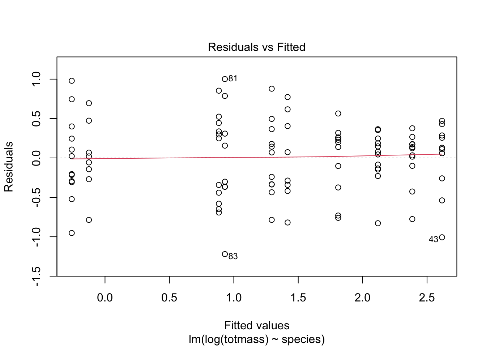
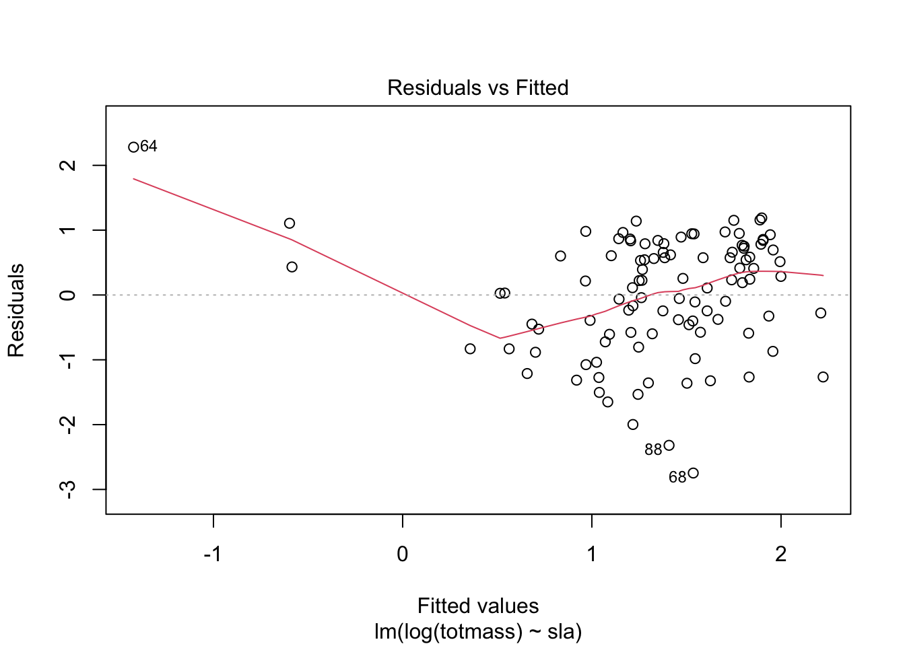
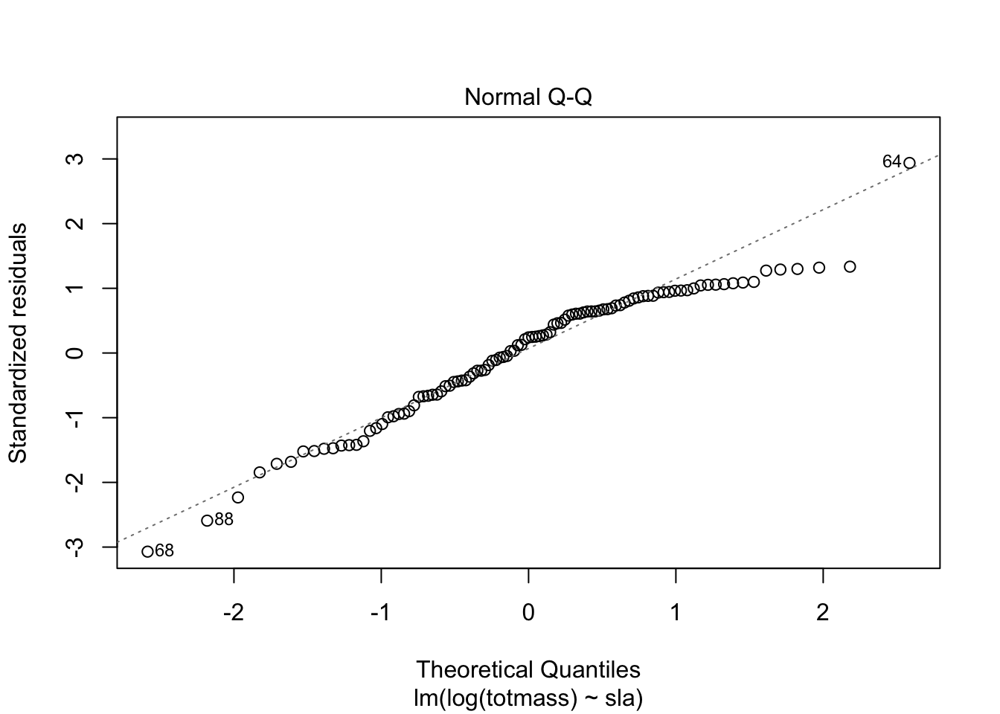
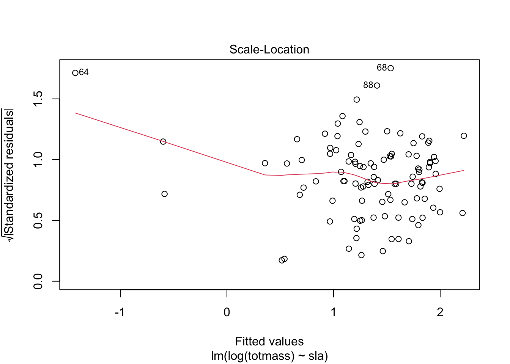
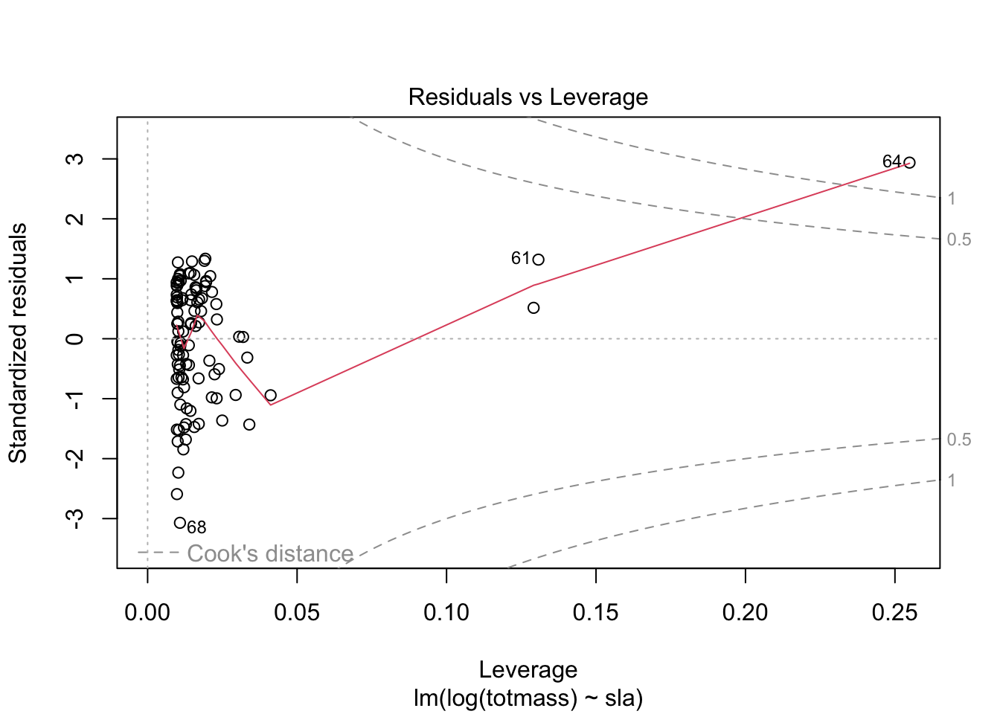
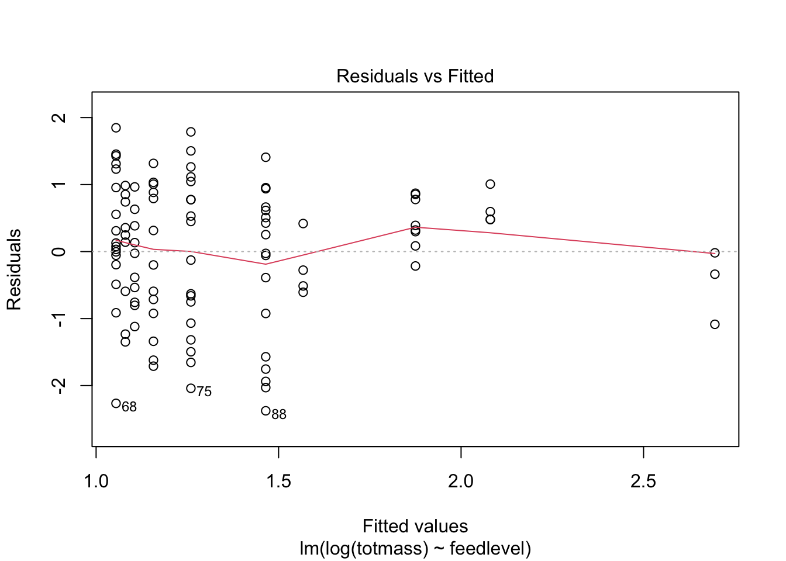
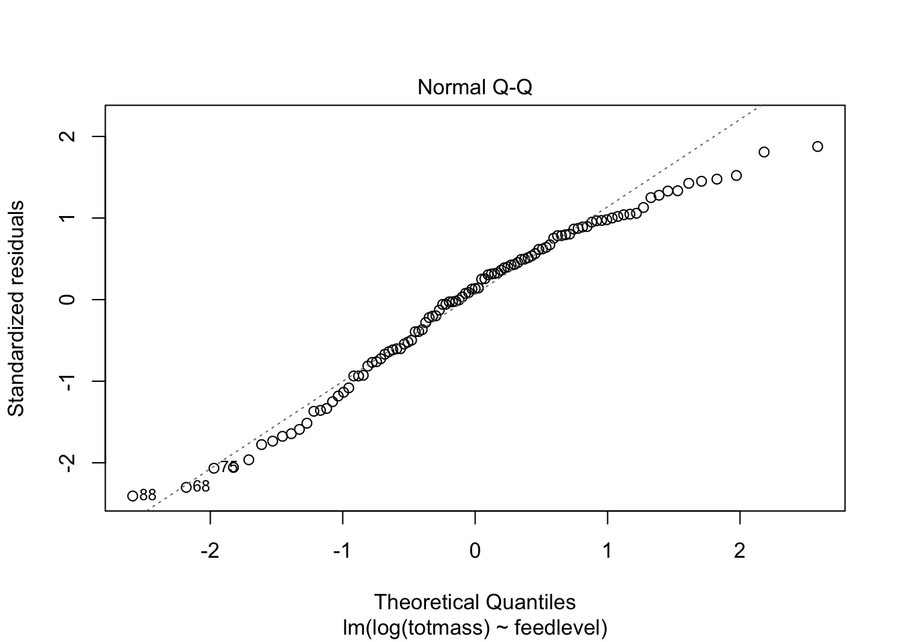
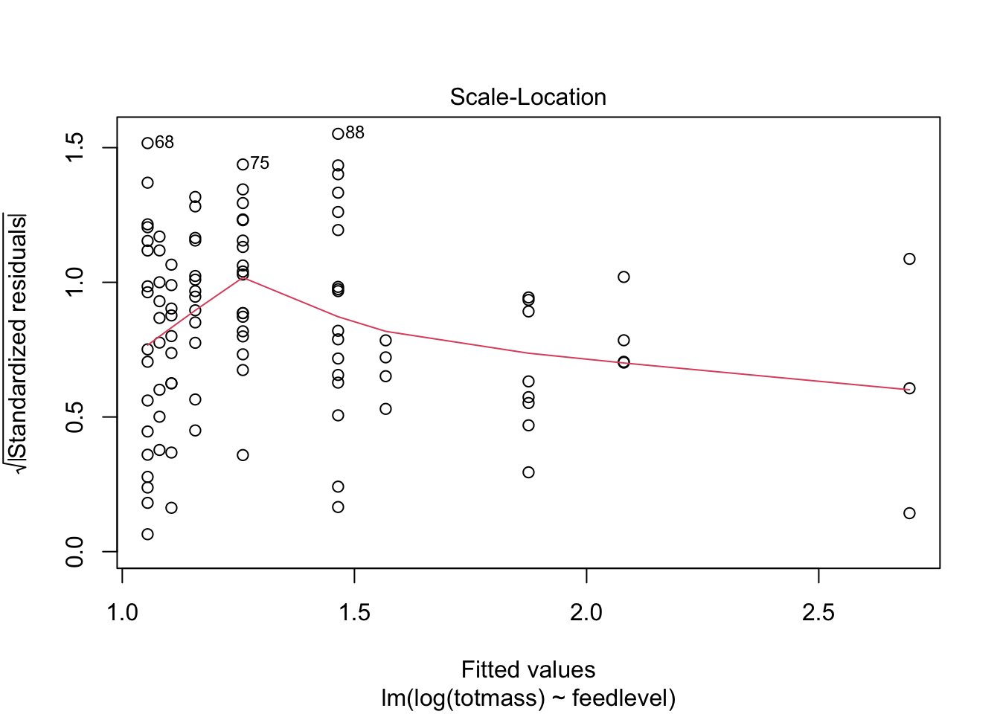
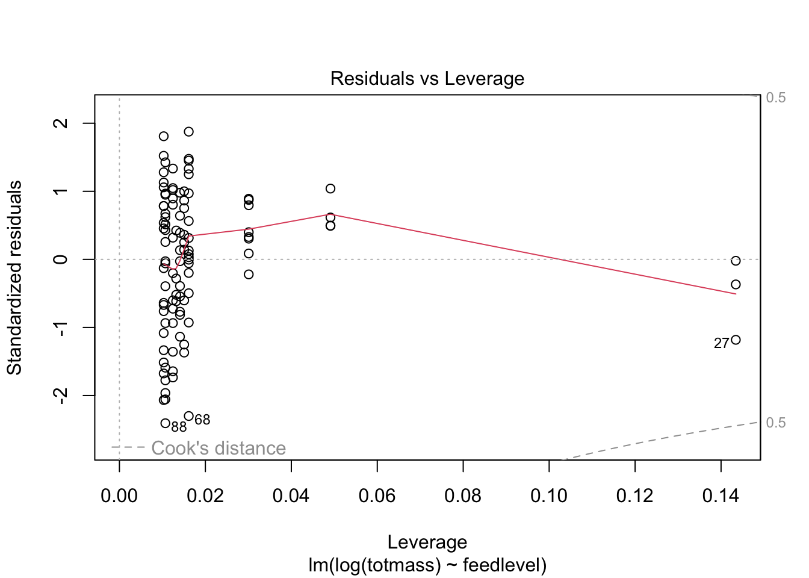
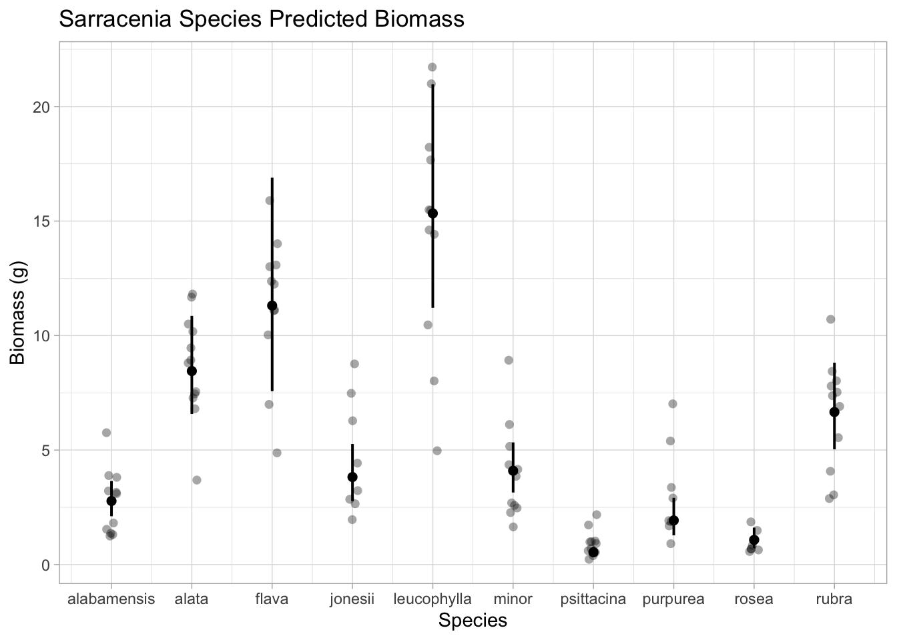

Sarracenia are pitcher plants that are carnivorous and bright in appearance. Pitchers are specialized leaves that Sarracenia have, which have been evolved to capture and digest prey (Fish). Specially, they have been found to obtain, use, store, and re-use nitrogen as a major component of their plant fitness (Butler). People care about Sarracenia because they help to control insect populations and cycle nutrients in their ecosystems (Newell). It is important to understand how the characteristics of Sarracenia predict their biomass because it provide helpful insight to their ecological role and how they affect the environment. In this study, predicting biomass based off of Sarracenia characteristics will be addressed. Specifically, Sarracenia will be given differing amounts of prey, and the effects on photosynthetic rate, chlorophyll fluorescence, growth, architecture, foliar nutrient, and chlorophyll content will be measured. The hypothesis that was tested was that increased prey availability to Sarracenia would increase overall plant biomass.
Methods
Code
library(tidyverse)library(here)library(janitor)library(ggeffects)library(performance)library(naniar) # or equivalentlibrary(flextable) # or equivalentlibrary(car)library(broom)# would be nice to have#install.packages("corrplot") library(corrplot)#install.packages("AICcmodavg")library(AICcmodavg)#install.packages("GGally")library(GGally)#install.packages("MuMIn")library(MuMIn)
Description of Data Organization and Processing
Reading in the data using the [here] package and organizing the data to have to columns we want.
Code
plant <-read_csv(here("data", "hf109-01-sarracenia.csv")) %>%# make the column names cleanerclean_names() %>%# selecting the columns of interestselect(totmass, species, feedlevel, sla, chlorophyll, amass, num_lvs, num_phylls)
Visualization of Missing Observations and Processing
Visualizing the missing observations from “plants” data with the “gg_miss_var” function. As seen in the visualization plot, chlorophyll, amass, and sla have comparatively more missing data than the other variables. Variables on the y-axis and the number of missing data on the x-axis.
Code
# creating data visualization of missing data in plants datagg_miss_var(plant)
Subsetting the data by dropping NAs using the drop_na function:
Code
# create subset of data drapping Nasplant_subset <- plant %>%drop_na(sla, chlorophyll, amass, num_lvs, num_phylls)
Visualization of Pearson’s Correlation Between Variables
Creating a correlation plot using “corrplot” and using Pearson’s r. The variables on the x-axis and the y-axis and Pearson’s r value is shown by color-coded numbers between variables. Additionally, Pearson’s r displays if the variables are positively or negatively correlated.
Code
# calculate pearson's r for numerical values onlyplant_cor <- plant_subset %>%select(feedlevel:num_phylls) %>%cor(method ="pearson")# creating a correlation plotcorrplot(plant_cor,# change the shape of what's in the cellsmethod ="ellipse",addCoef.col ="black" )
Visualization of Relationships Between Variables
Visualize the relationships between variables in the plant data set by plotting each variable against one another in a pairs plot with “ggpairs”. The variables are on the x-axis and y-axis; when they intersect, the pairs plot shows their correlation with dot plots and the species row displays a box plot with error bars. Additionally, there are correlation values between the variables.
Code
# create a pairs plot vaisualization, not related to correlation for all of the selected variablesplant_subset %>%select(species:num_phylls) %>%ggpairs()
Null and Full Models
Create null and full models in order to determine the predictability of different variables.
Code
# making a null model, which is represented by a one and we only want it from the plant_subset datasetnull <-lm(totmass ~1, data = plant_subset)# now we include all of the variablesfull <-lm(totmass ~ species + feedlevel + sla + chlorophyll + amass + num_lvs + num_phylls, data = plant_subset)
Visual and Statistical Assumption Checks for Null and Full Models
Visually assessing the data using diagnostic plots for the full model. The residuals vs fitted plot displays a fairly straight line with slightly cone shaped data plot. The normal q-q plot shows fairly uniform data and the scale-location shows a slightly positive linear relationship. The residuals vs leverage plot is relatively clumped, although there are no data points past Cook’s Distance.
Code
# make diagnostic plot for full modelpar(mfrow =c(2,2))plot(full)
Code
# check normality and heteroscedasticity for full modelcheck_normality(full)
Warning: Non-normality of residuals detected (p < .001).
Transform the response variable by taking the log 10; this is because the residuals are not normal because data from the field is typically non-normal.
Code
# take log 10 of data to transformfull_log <-lm(log(totmass) ~ species + feedlevel + sla + chlorophyll + amass + num_lvs + num_phylls, data = plant_subset)null_log <-lm(log(totmass) ~1, data = plant_subset)# check normality and variance of data after transformationplot(full_log)
Code
check_normality(full_log)
OK: residuals appear as normally distributed (p = 0.107).
Code
check_heteroscedasticity(full_log)
OK: Error variance appears to be homoscedastic (p = 0.071).
# model with species predicting totmassmodel2_log <-lm(log(totmass) ~ species, data = plant_subset)
Check assumptions for model 2: using diagnostic plots and checking for normality and variance. The data looks relatively normal because the line of best fit is relatively straight and there are no points past Cook’s distance.
Code
# plot the diagnostics for model 2plot(model2_log)

Code
# check normality and variancecheck_normality(model2_log)
OK: residuals appear as normally distributed (p = 0.374).
Code
check_heteroscedasticity(model2_log)
OK: Error variance appears to be homoscedastic (p = 0.100).
Compare models using Akaike’s Information criterion (AIC) values
Code
#AICc is for smaller smaple sizes#MUMIn and AIC also workAICc(full_log)
[1] 133.9424
Code
AICc(model2_log)
[1] 157.5751
Code
AICc(null_log)
[1] 306.0028
Code
# compare AIC values to null and full modelsMuMIn::AICc(full_log, model2_log, null_log)
# model comparing sla and totmassmodel3_log <-lm(log(totmass) ~ sla, data = plant_subset)
Check assumptions for model 3: using diagnostic plots and checking normality and variance. The data varied from the normal line, but there are no data points past Cook’s distance.
Code
plot(model3_log)




Code
# check normality and variancecheck_normality(model3_log)
Warning: Non-normality of residuals detected (p = 0.002).
We compared models using AIC and chose the model with the lowest value, which was full_log because it has a AIC value of 133.9 and sla’s AIC value is 274.7. Because 133.9 is less than 274.7, it full_log is the model that explains the variance the most.
Model 4
Code
# model with feedlevel predicting totmassmodel4_log <-lm(log(totmass) ~ feedlevel, data = plant_subset)
Check assumptions for model 4: using diagnostic plots and checking normality and variance. The data is shown to deviate slightly from the normal line, especially in the normal q-q plot, although no points go past Cook’s distance.
Code
plot(model4_log)




Code
# check normality and variancecheck_normality(model4_log)
Warning: Non-normality of residuals detected (p = 0.018).
Code
check_heteroscedasticity(model4_log)
OK: Error variance appears to be homoscedastic (p = 0.261).
Compare models using Akaike’s Information criterion (AIC) values
Code
#AICc is for smaller smaple sizes#MUMIn and AIC also workAICc(full_log)
[1] 133.9424
Code
AICc(model4_log)
[1] 294.978
Code
AICc(null_log)
[1] 306.0028
Code
# compare this model against null and full modelsMuMIn::AICc(full_log, model4_log, null_log)
The sampling methods involved Sarracenia species each with two plants assigned one of six feeding levels; the regression design ranged from 0 to 0.25g of finely ground wasps per feeding for small sized species, 0 to 0.5g for intermediate sized species, and 0 - 1.0g for large sized species. The population size was 120 Sarracenia plants total. The plants were given feed one a week for a total duration of seven weeks. Above ground size and Amass were measured prior to commencing treatments (Ellison). The data for this analysis was organized by filtering to only look at the totmass (total above and below ground plant biomass), the Sarracenia species, feed level, sla (specific leaf area of youngest fully-expanded leaf), chlorophyll, Amass (mass-based light-saturated photosynthetic rate of youngest leaf), num_lvs (total number of pitcher and phyllodes produced by each plant), and num_phylls (number of phyllodes produced by each plant). As for missing data, it seems that num_phylls and num_lvs also have two missing data points whereas totmass, species, and feedlevel is missing no data. This is probably because species and feed level were determined before the experiment and did not need to be measured, whereas chlorophyll, amass, and sla are variables that are harder to measure because they are dependent on the growth of the Sarracenia plants. The “plant” data set was then made into a subset to get rid of the “Nas” missing data. Using a correlation plot, we visually represented the relationship between numerical variables in our data set. To determine the relationships between numerical variables in our data set, we calculated Pearson’s r and visually represented correlation using a correlation plot. The correlation coefficients range from -1 to 1, with positive values indicating a positive correlation and negative values indicating a negative correlation. The variables with the least correlation are num_phylls and chlorophyll and the variables with the most correlation are amass and sla, which had a Pearson’s value of more than 0.3. To determine how species and physiological characteristics predict biomass, this pairs plot provided a matrix of scatter plots, with each variable plotted against every other variable. Analyzing the scatter plots can identify the correlations between the variables and outliers that may require further investigation. The null model that was created demonstrates the null hypothesis that the variables, or Sarracenia characteristics, do not predict biomass and only takes the total mass into account. The full model demonstrates the alternative hypothesis that the variables do predict biomass and takes all of the variables into account. The logs of the variables are taken to make the data linear. We visually assess normality and homoscedasticity of residuals using diagnostic plots for the full model. We also tested for normality using the Shapiro-Wilk test (null hypothesis: variable of interest (i.e. the residuals) are normally distributed). We tested for homoscedasticity using the Breusch-Pagan test (null hypothesis: variable of interest has constant variance); for homoscedasticity, this is easier to see in residuals vs fitted where dots are clumped in beginning and then spread out, therefore it is borderline homoscedasticity. Transform the response variable by taking log 10 to mathematically transform the residuals to be normal because most data from the field, is not normal. After transforming the data, the residuals appeared as normally distributed and the variance appeared to be homoscedastic, whereas before the mathematical transformation they were not. We evaluated multicollinearity by calculating generalized variance inflation factor and determined that species is the variable with the greatest vif value. All of the other variables have very similar vif values, all being around 2 and 3, whereas species gvif value is 42. For model 2, we tested the relationship between species and totmass. The species model2_log passes the check for normality and also passes the check for heteroscedasticity. Between full_log and model 2, the model that seems to be the best is full_log (explains the most variance) because it’s value is the lowest. The AIC value for the full_log was 133.9 and for model 2 is was 157.6 and 133.9 < 157.6 so full_log best explains the variance. For model 3, we tested how the variable sla predicts totmass; the sla model3_log does not pass the check for normality and also does not pass the check for heteroscedasticity. We compared full_log and model 3 using AIC and chose the model with the lowest value, which was full_log because it has a AIC value of 133.9 and sla’s AIC value is 274.7. Because 133.9 is less than 274.7, it full_log is the model that explains the variance the most. For model 4 we tested the predictability of feed level on totmass. Model 4 did not pass the check for normality, although it passed the check for heteroscedasticity. The model that seems to be the best is full_log because it’s value is the lowest. The AIC value for the full_log was 133.9 and for model 4 is was 295.0 and 133.9 < 295.0. We are looking for the simplest explanation, so once again full_log best explains the variance.
table <-tidy(full_log, conf.int =TRUE) %>%# change p-value numbers if they're small with mutate# change estimates, standard error, and t-stats to round # mutate () %>% # make into a flextableflextable() %>%# fit for viewerautofit()table
term
estimate
std.error
statistic
p.value
conf.low
conf.high
(Intercept)
-1.339043200
0.597726532
-2.2402271
0.027624109607483092
-2.527089405
-0.1509969955
speciesalata
1.113162580
0.184020930
6.0491086
0.000000035633453091
0.747401056
1.4789241035
speciesflava
1.404562038
0.262954818
5.3414577
0.000000728606298866
0.881910865
1.9272132117
speciesjonesii
0.319652351
0.196426010
1.6273423
0.107280978897063603
-0.070765614
0.7100703152
speciesleucophylla
1.709035391
0.227608275
7.5086698
0.000000000048774953
1.256639298
2.1614314841
speciesminor
0.389310367
0.187903472
2.0718636
0.041239074384119417
0.015831871
0.7627888636
speciespsittacina
-1.645197874
0.207034720
-7.9464830
0.000000000006356134
-2.056701798
-1.2336939506
speciespurpurea
-0.364347584
0.254380246
-1.4322951
0.155642631385407848
-0.869955868
0.1412607001
speciesrosea
-0.947383285
0.260494896
-3.6368593
0.000466976667424191
-1.465145097
-0.4296214723
speciesrubra
0.875341885
0.196361315
4.4578123
0.000024573993550446
0.485052508
1.2656312619
feedlevel
-0.474255269
0.234492879
-2.0224719
0.046198841611705344
-0.940335257
-0.0081752817
sla
-0.002493083
0.001160230
-2.1487826
0.034429589763780327
-0.004799167
-0.0001869994
chlorophyll
0.004368330
0.001189484
3.6724575
0.000414110175835846
0.002004101
0.0067325586
amass
0.002337656
0.002988210
0.7822929
0.436166480376765642
-0.003601736
0.0082770479
num_lvs
0.091763935
0.022413350
4.0941643
0.000094562482452723
0.047214976
0.1363128941
num_phylls
-0.039585071
0.051713890
-0.7654630
0.446067519262092982
-0.142372027
0.0632018848
This model makes predictions for totmass based on the species variable; the species is on the x-axis and the biomass (grams) is on the y-axis. The species include alabamensis, alata, flava, jonesii, leucophylla, minor, psittacina, purpurea, rosea, and rubra. The data is displayed with a dot plot, which is divided by species and the mean is displayed with the standard error in the form of error bars with the data points displayed behind the bars.
Code
# ggpredict function used to make model predictions with the full logmodel_pred <-ggpredict(full_log, terms ="species", back.transform =TRUE)# plot predicted datamodel_plot <-plot(model_pred, add.data =TRUE) +# change theme and create a titletheme_light() +labs(x ="Species", y ="Biomass (g)", title ="Sarracenia Species Predicted Biomass")model_plot

The best model that used Sarracenia characteristics to predict biomass was the full model. The full model includes all variables such as species, feedlevel, sla, chlorophyll, amass, num_lvs, and num_phylls. The results from the full model was an AIC value of 133.9, which was the lowest AIC value and therefore the best predictor of biomass, despite testing testing single variables predictability of mass. It was because the full model included all the variables that it was the best predictor; relying on one variable is not as dependable because it is more subject to extraneous factors. With the full model, the physciological, morphological, and taxonomic factors were all taken into consideration. Additionally, the full model was shown to be normally distributed and homeoskedascity (variance).
We used model 2 to visualize species as a predictor variable of biomass; it is important to note that after the full model, model 2 had the lowest AIC value of 156.7. The predicted biomass (g) of Sarracenia is plotted against the different species within the data set. Furthermore, the different Sarracenia species largely differ in biomass. The species leucophylla has the greatest predicted biomass and the species psittacina is predicted to have the smallest biomass. The data is displayed as a scatter plot illustrating the mean and standard error bars and the data points behind.
The full model is full because it creates a full picture. It takes all of the predictor variables into account: chlorophyll amount, feed level, species, and pitcher amount. Because the full model does not exclude factors, it represents the data pretty holistically and successfully represents the relationships between predictor variables and biomass of Sarracenia. Furthermore, the full model represents the relationship between Sarracenia plants physiological, morphological, and taxonomic characteristics.
Bibliography
BUTLER, J.L. and ELLISON, A.M. (2007), Nitrogen cycling dynamics in the carnivorous northern pitcher plant, Sarracenia purpurea. Functional Ecology, 21: 835-843. https://doi.org/10.1111/j.1365-2435.2007.01307.x (Accessed 2023-06-04).
Ellison, A. and E. Farnsworth. 2021. Effects of Prey Availability on Sarracenia Physiology at Harvard Forest 2005 ver 18. Environmental Data Initiative. https://doi.org/10.6073/pasta/26b22d09279e62fd729ffc35f9ef0174 (Accessed 2023-06-05).
Fish, Durland, and Donald W. Hall. "Succession and Stratification of Aquatic Insects Inhabiting the Leaves of the Insectivorous Pitcher Plant, Sarracenia Purpurea." The American Midland Naturalist 99, no. 1 (1978): 172–83. https://doi.org/10.2307/2424941 (Accessed 2023-06-04).
Newell, S.J. and Nastase, A.J. (1998), Efficiency of insect capture by Sarracenia purpurea(Sarraceniaceae), the northern pitcher plant. Am. J. Bot., 85: 88-91. https://doi.org/10.2307/2446558 (Accessed 2023-06-04).